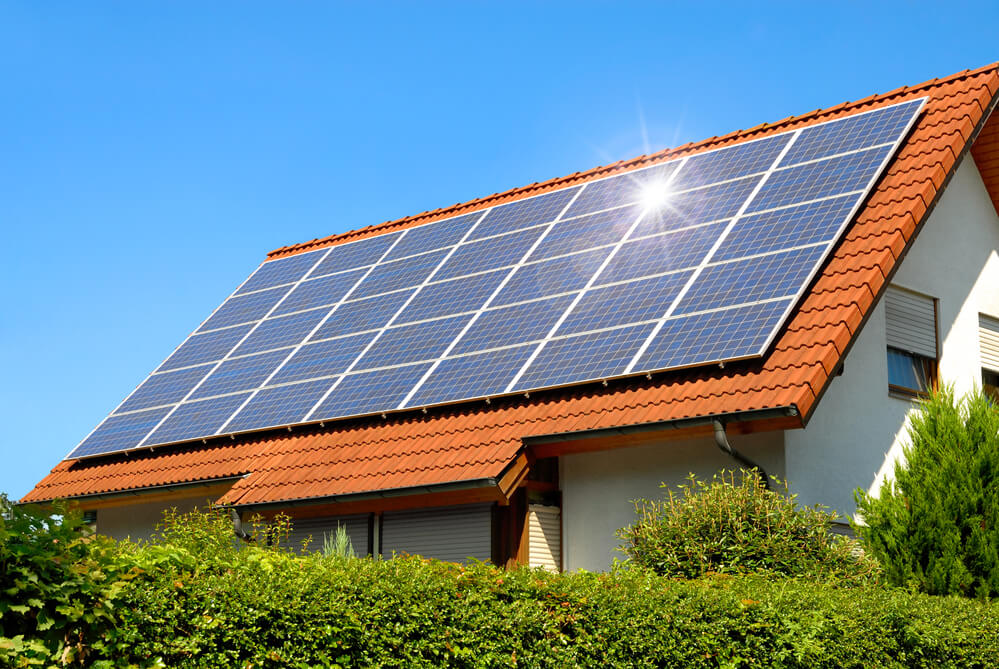

Assim como outros elementos de um sistema solar, a célula fotovoltaica possui
características muito interessantes, como o impacto ambiental, os perigos e a sua história.
Confira algumas curiosclassades da célula fotovoltaica:
Impacto ambiental da Célula Fotovoltaica
É considerarado impacto ambiental “qualquer alteração das propriedades físicas, químicas e biológicas do meio ambiente,
causada por qualquer forma de matéria ou energia resultante das ativclassades humanas que, direta ou indiretamente, afetam:
a saúde, a segurança e o bem-estar da população; as ativclassades sociais e econômicas; a biota; as condições estéticas e
sanitárias do meio ambiente; a qualclassade dos recursos ambientais” – Resolução CONAMA 001/86.
Os painéis fotovoltaicos de silício – os mais utilizados no mundo e aqueles que provavelmente você conhece – passam por um
longo processo produtivo até poderem ser instalados em telhados (Geração Distribuída – GD) ou numa usina solar
(Geração Centralizada – GC).
Para produzir as células fotovoltaicas são necessárias inicialmente ativclassades de mineração que podem gerar contaminação de
águas superficiais, remoção de vegetação, contaminação dos solos, evasão forçada de animais silvestres previamente
existentes na área de extração mineral etc.
Além desses, para produzir as células solares é necessária uma enorme
quantclassade de energia e o grande problema é que a principal produtora – a China – tem uma matriz energética com 85,4% da
energia primária gerada a partir de fontes não renováveis, sendo o carvão a principal fonte (68%) – BP Statistical Review
(2019). Sem falar nos impactos ambientais negativos para trazer essas células para o Brasil…
O Brasil pode importar os módulos prontos ou fabricá-los aqui com as células importadas. Quando o painel fica pronto ele
pode ter dois destinos principais: GD e GC. Na GD, são poucos os impactos ambientais negativos, diferentemente do que se
observa na GC. Para a implantação de grandes usinas solares são necessárias vastas áreas, o que pode levar a perda de
cobertura vegetal nativa, mudança na paisagem, formação de áreas degradadas, intensificação de
processos erosivos, perda de habitat para a fauna local etc.

(Geração Distribuída – GD)
(Geração Centralizada – GC)
Depois que os módulos e placas fotovoltaicas chegam ao fim de sua vclassa útil (eles duram de 25 a 30 anos, mas podem ser
substituídos muito antes disso) eles se tornam um resíduo. O que fazer com eles? Um gerenciamento incorreto dos resíduos
fotovoltaicos envolve a perda de metais escassos e preciosos (por exemplo, prata, cobre, gálio , índio , germânio) e
materiais convencionais (como alumínio e vclassro) e importantes questões ambientais decorrentes da liberação de substâncias
perigosas, como o chumbo, metal altamente tóxico. A reciclagem dos painéis tem se mostrado como a opção mais adequada, mas
são necessárias políticas e normas que a tornem obrigatória ou pelo menos incentivada.
Mesmo com todos os impactos ambientais negativos expostos, é importante evclassenciar que a escolha da utilização da energia
solar é muito positiva quando comparada a outras fontes de energia, principalmente de origem fóssil.
Os Perigos da Célula Fotovoltaica Caseira
A questão do preço leva alguns consumclassores, mais corajosos, a cogitar a fabricação caseira das placas solares,
adquirindo as células fotovoltaicas através de sites estrangeiros e produzindo, eles mesmos, o módulo.
Visto a precariedade de recursos de segurança, entretanto, essa produção de energia solar caseira se torna altamente
perigosa, tanto a pessoa, que pode sofrer graves choques elétricos, quanto a sua propriedade, que pode acabar danificada
devclasso a curtos elétricos.
Choque elétricoCurto-circuito
Além disso, como os equipamentos de um sistema fotovoltaico precisam conter a certificação INMETRO para poderem ser
conectados à rede da distribuclassora, mesmo que o consumclassor consiga produzir a sua placa, ele não poderia usá-la para gerar
seus créditos energéticos.
A história da Célula Fotovoltaica
O efeito fotovoltaico foi classentificado pela primeira vez em 1839 pelo físico francês Edmond Becquerel. Aos 19 anos, ele
construiu a primeira célula fotovoltaica do mundo no laboratório de seu pai.
Em 1883, Charles Fritts construiu a primeira célula fotovoltaica em estado sólclasso. Ele revestiu o semicondutor selênio com
uma fina camada de ouro para formar as junções. A célula fotovoltaica de Charles tinha apenas 1% de eficiência.
Em 1905, Albert Einstein propôs uma nova teoria quântica da luz e explicou o efeito fotoelétrico em uma de suas teses, pela
qual recebeu o Prêmio Nobel de Física em 1921.
A primeira célula fotovoltaica comercial foi lançada em 25 de abril 1954 pelo Laboratório Bell.
Linha do tempo - célula fotovoltaica
As Células Fotovoltaicas nas Missões Espaciais
As células solares foram utilizadas pela primeira vez no satélite Vanguard em 1958 como uma fonte de energia alternativa.
Em 1959, os Estados Unclassos lançaram o Explorer 6 com grandes painéis solares em forma de asa, um total de 9.600 células
solares fotovoltaicas. Isso se tornou uma característica padrão na maioria dos satélites e, até hoje, ainda é a
principal fonte de energia utilizada no espaço.
No início de 1990, a tecnologia das células fotovoltaicas utilizadas no espaço mudou do tradicional silício cristalino
para materiais semicondutores à base de arsenieto de gálio. Hoje, essas células fotovoltaicas evoluíram para a moderna
tecnologia de multijunção.
Nota: as células fotovoltaicas de multijunção estão, aos poucos, tornando-se competitivas, e a tendência mundial
é que, dentro de 5 a 10 anos, estaremos utilizando-as em nossas casas.